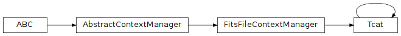

GIFTS Trigger Catalog Data (gdt.missions.gifts.tcat)¶
Note
The GIFTS trigger catalog data implementation and this document are currently based on those provided by the Fermi Gamma-ray Data Tools, and will be revised in future versions.
The GIFTS Trigger CATalog (TCAT) file is a FITS file containing high-level
information about an on-board GIFTS trigger and
includes basic information in the trigger catalog. The TCAT is purely metadata,
having only a single FITS header, but the Tcat class contains some convenience
functions for accessing and converting the metadata into GDT objects.
It builds on the the Fermi Trigger CATalog (TCAT) file.
We can open a TCAT file:
>>> from gdt.missions.gifts.tcat import Tcat
>>> tcat = Tcat.open("gifts/gifts_tcat_all_bn220624124_v01.fit")
>>> tcat
<Tcat: GRB220624124>
Alternatively, the TCAT can be retrieved from the current GIFTS burst catalog:
>>> from gdt.missions.gifts.catalogs import BurstCatalog
>>> burstcat = BurstCatalog()
>>> tcat = burstcat.get_tcat(trigger_name="bn220624124")
We can retrieve some basic properties:
>>> tcat.name
'GRB220624124'
>>> tcat.trigtime
677732319.512006
>>> tcat.time_range
<TimeRange: (677732188.572006, 677732794.792622)>
We can also retrieve the instrument that localized this trigger and what that localization is:
>>> tcat.localizing_instrument
'GIFTS'
>>> tcat.location
<SkyCoord (ICRS): (ra, dec) in deg
(180.7, 20.58)>
We can also retrieve the position of GIFTS in orbit at the time of the detection:
>>> tcat.gifts_location
(<Longitude 303.2833 deg>, <Latitude 17.5167 deg>)
The full set of metadata is available in the header:
>>> tcat.headers
<TcatHeaders: 1 headers>
Reference/API¶
gdt.missions.gifts.tcat Module¶
Classes¶
|
TCAT (Trigger CATalog) file class. |
Class Inheritance Diagram¶
